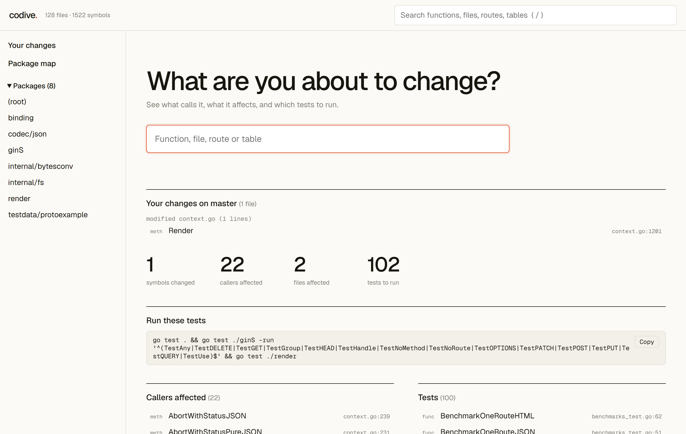
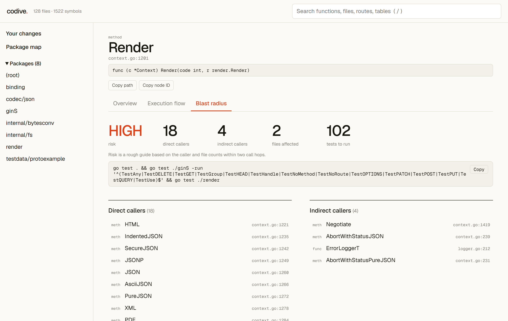
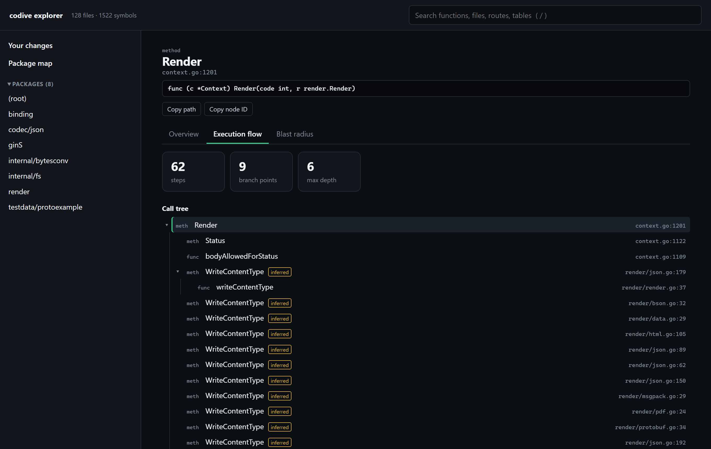

Know what breaks before your AI agent edits your code.
codive maps your Go project on your own machine, then shows the callers, affected files and tests to run for any change. One binary. No account.
curl -fsSL https://recscse.github.io/codive/install.sh | bash
Windows and other options are in the install guide.

codive web on gin at 0f09c3a, after a one-line edit to Context.Render.Agents edit what they can see. codive shows them the rest.
Your agent asks instead of guessing
codive setup connects 18 MCP tools, so it can look up symbols, callers and file outlines rather than searching and opening whole files.
You see your change's reach
The explorer reads your uncommitted work and lists what it affects, with a go test command to copy.
Results you can check
Go calls are resolved with the Go type checker, not by matching names. Possible interface targets are marked as inferred.
Check the blast radius first
Pick a function. See direct and indirect callers, the files involved and the tests to run.


Follow the code path
Start at an HTTP route, CLI command or function and walk what it reaches, down to database tables.
Three commands to your first answer
$ codive init . # index this repo $ codive setup # connect your AI tools $ codive web . # open the explorer
Tested against gopls, misses included
We compared codive's callers with gopls, the official Go language server, on random samples. codive reported no caller that gopls didn't, and missed some that it did.
| Repository | Functions | Agreed | codive only | gopls only |
|---|---|---|---|---|
| spf13/cobra | 60 | 411 | 0 | 0 |
| gin-gonic/gin | 58 | 122 | 0 | 0 |
| junegunn/fzf | 39 | 102 | 0 | 12 |
| go-chi/chi | 60 | 79 | 0 | 24 |
| go-gitea/gitea | 11 | 18 | 0 | 0 |
Small samples, and cobra supplies most agreed links. Known gaps: calls through standard library interfaces, platform-specific files, reflection, and route prefixes set in another function. Treat results as known callers, not a guarantee.
Language support
- Go
- Calls, flow, blast radius, routes, symbols
- Python, JS, TS, Java
- Symbols, search, pattern-matched routes
- C#, Rust
- Symbols, search
Does it save tokens?
We haven't measured this on real agent tasks yet, so we don't claim a number. An output-size comparison on one repo shows large savings on diffs and big files, and git grep winning small lookups.